Beats for Love
Oficjalny fotograf od 2017. Armin van Buuren, Fatboy Slim, deadmau5, Alok i dziesiątki innych gwiazd.
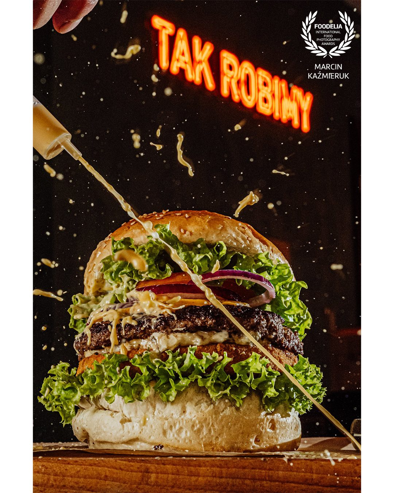
KulinarnaZobacz →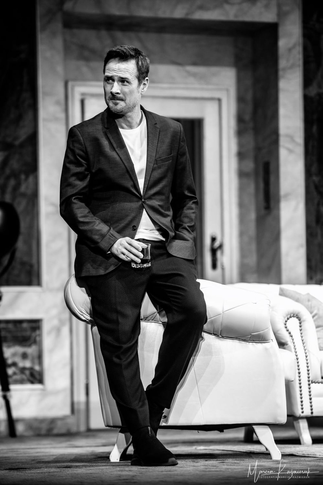
BiznesZobacz →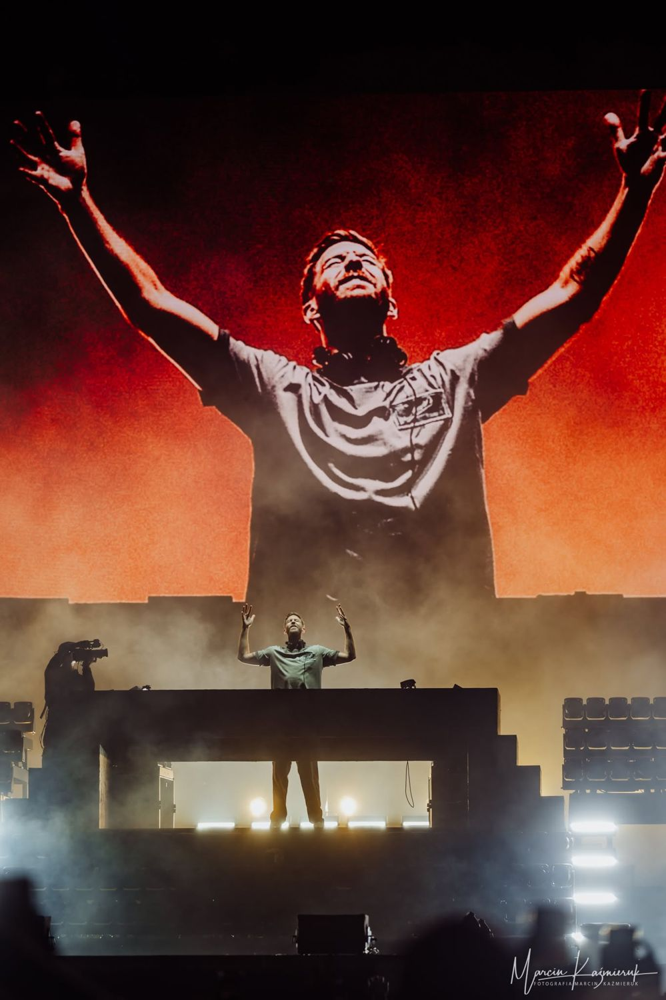
WydarzeniaZobacz →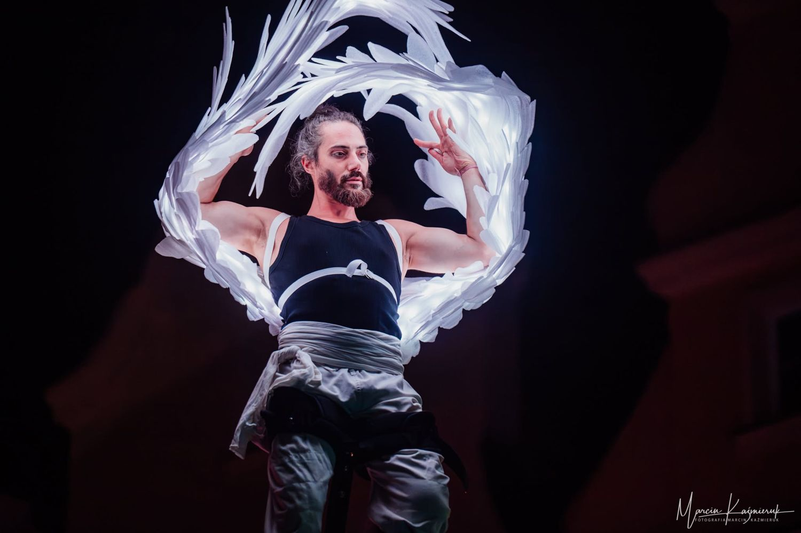
TeatrZobacz →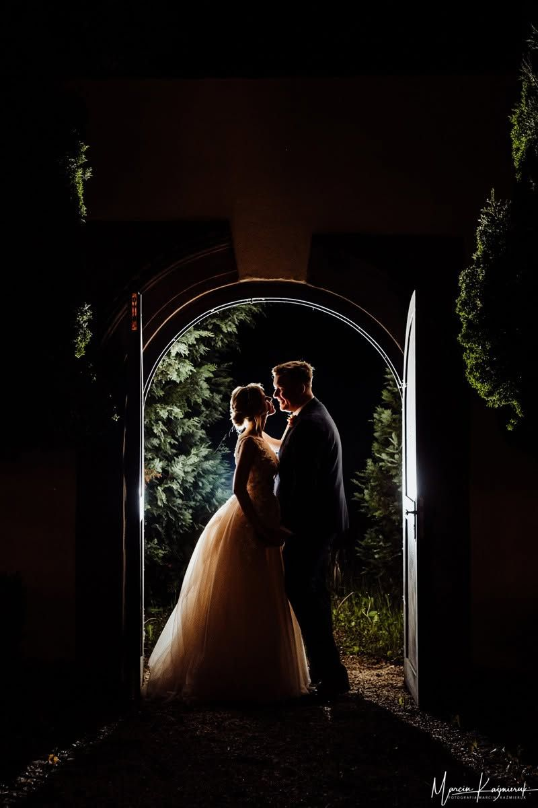
ŚlubyZobacz →Gastronomia, marki, wydarzenia, scena i śluby. Dokumentuję realne momenty, od najważniejszych wydarzeń polskiej sceny kulinarnej po najważniejszy dzień w życiu.
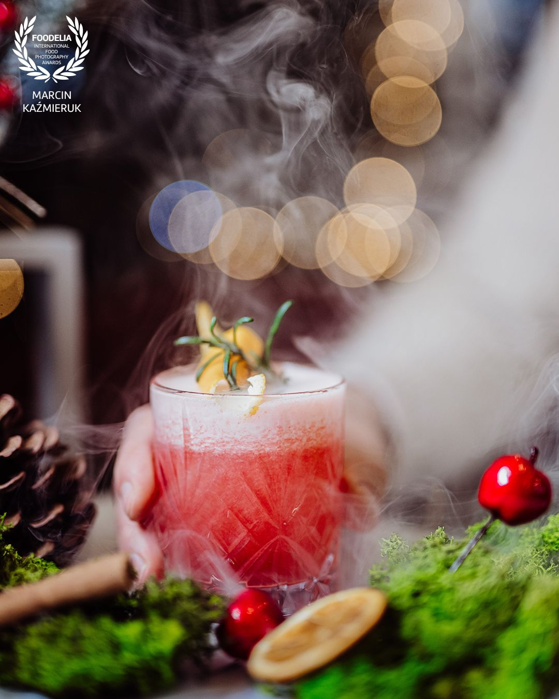
#1 wśród fotografów kulinarnych Foodelia 2025. Dania, menu, atmosfera lokalu.
Zobacz →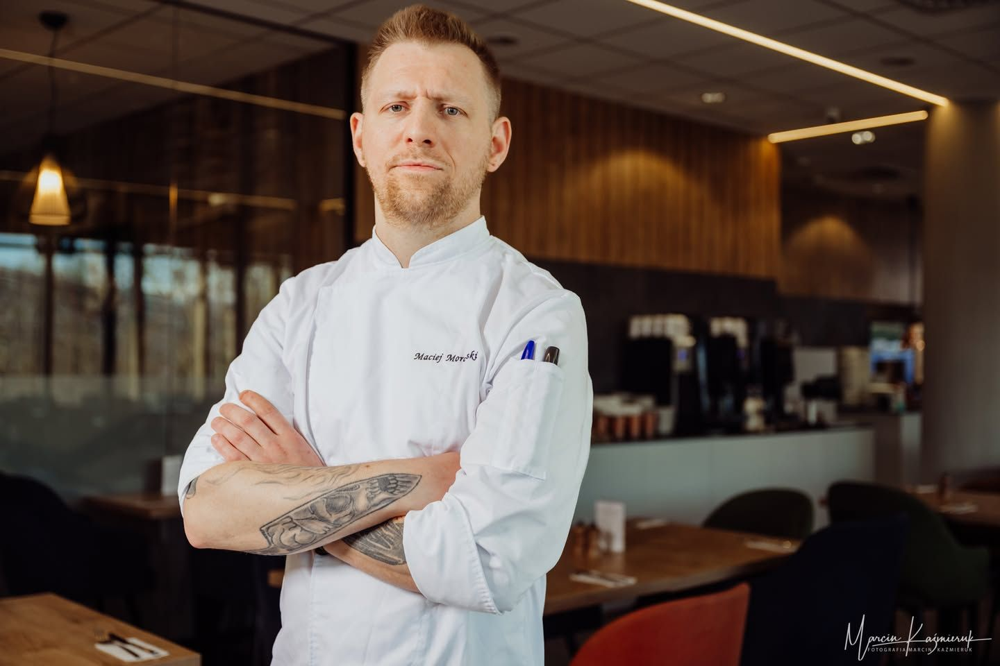
Wnętrza restauracji, portret wizerunkowy dla marek i osobistości.
Zobacz →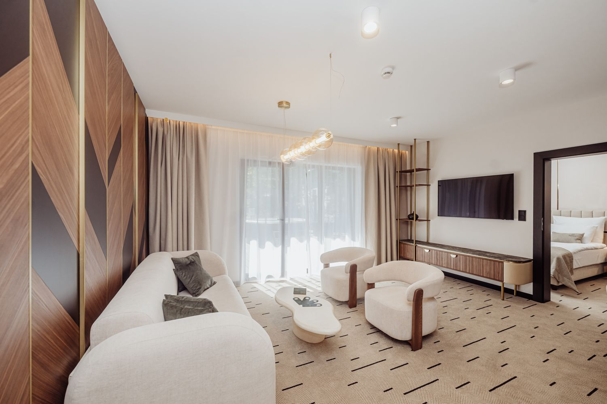
Hotele, restauracje i wnętrza, które sprawiają, że gość chce tam być, zanim przyjedzie.
Zobacz →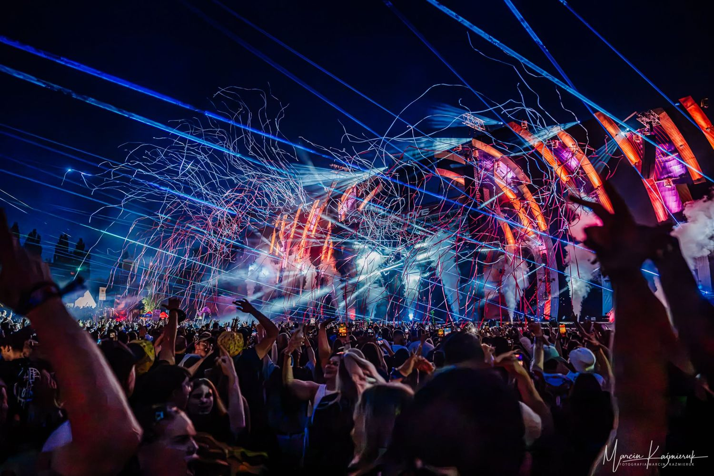
Festiwale, gale, koncerty. Beats for Love, Gault&Millau, Bocuse d'Or, Opole.
Zobacz →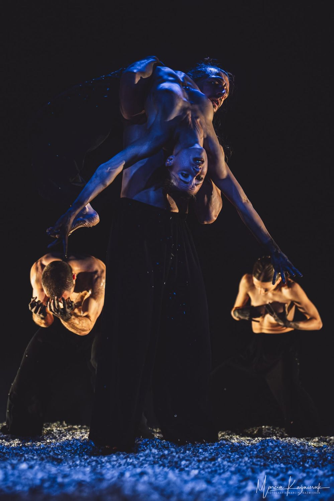
Stały fotograf Teatru im. Norwida. Spektakle, próby, festiwale teatralne.
Zobacz →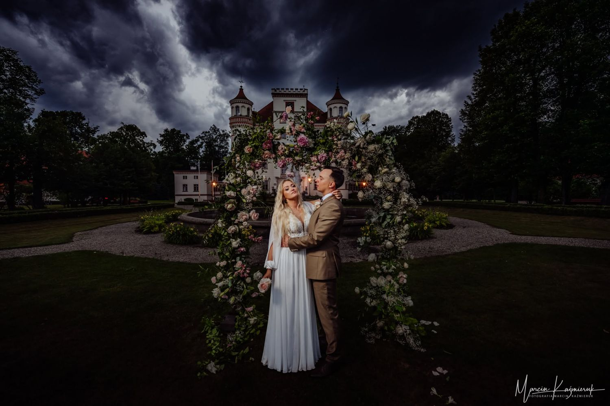
Reportaż z najważniejszego dnia. Wyróżnienia Flash Masters, Fearless i stypendium Two Mann Studios.
Zobacz →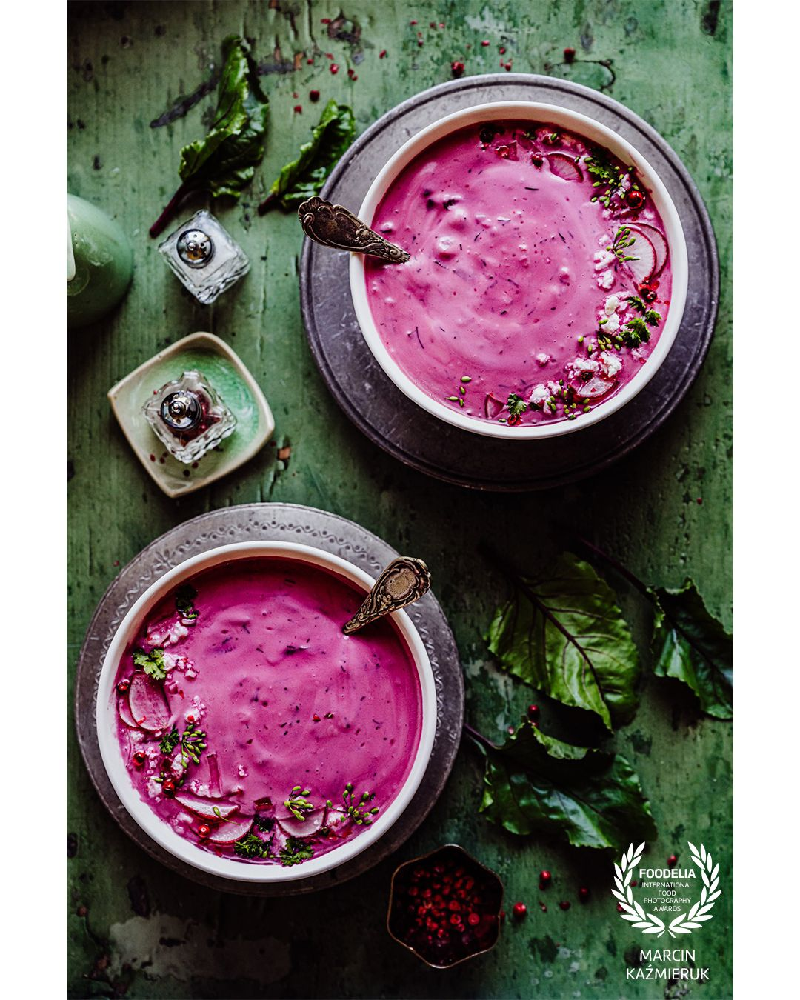
IPA 2026 (1. miejsce), Foodelia #1, Forbes, Newsweek, Flash Masters, Osobowość Roku.
Zobacz →Zdjęcia pełne emocji, ciepła i pozytywnej energii. Kadry nietuzinkowe, naturalne, wzruszające. Prosto z aparatu wyglądają idealnie. Czuliśmy się, jakbyśmy znali się od lat.
Naturalne, piękne, oddające emocje, a przy tym oryginalne. Zaufajcie Marcinowi, a nie będziecie żałować. Zadzieje się magia. Szkoda, że nie można dać dziesiątki.
Świetnie wyłapuje emocje. Jego pomysły sprawiają, że zapominasz, że jesteś przed obiektywem. My i goście weselni jesteśmy zachwyceni zdjęciami.
Ślub, sesja kulinarna, wydarzenie czy spektakl, opowiedz mi, co chcesz uwiecznić.
KontaktTo zdanie z filmu o Louisie Wainie towarzyszy mi w pracy. Bo fotografia to dla mnie właśnie to, przepuścić świat przez siebie i pokazać go takim, jakim jest naprawdę.
Jestem jeleniogórzaninem od urodzenia. Zanim na dobre wziąłem aparat do ręki, przez lata tańczyłem towarzysko, trenowałem capoeira, skończyłem anglistykę i podyplomowe tłumaczenia. Pracowałem w kulturze, byłem nauczycielem, tłumaczem, wykładowcą i didżejem.
Te wszystkie światy nie poszły na marne, złożyły się w jeden sposób patrzenia. Taniec nauczył mnie rytmu i ruchu. Kultura, wrażliwości. Język, rozmowy z ludźmi z całego świata, od par młodych po gwiazdy estrady.
Dziś fotografuję śluby, jedzenie, wydarzenia i teatr. Pracuję na Nikonie jako członek Nikon Professional Services. I robię to bez Photoshopa i bez AI, bo wierzę, że najmocniejsze jest to, co wydarzyło się naprawdę.
W jeden rok jako fotograf odwiedziłem około 250 miejsc w 77 miastach i 6 krajach. Ale najważniejsze wciąż dzieje się tu, w Karkonoszach, i w ludziach, których spotykam z aparatem w dłoni.
Kilkanaście lat pracy, nagrody krajowe i międzynarodowe, publikacje w ogólnopolskiej prasie. Oto najważniejsze z nich.
Za każdą z tych nagród stoją lata pracy i setki kadrów. Oto te, które znaczą dla mnie najwięcej, i dlaczego.
Numer jeden na świecie w Foodelii to nie jeden szczęśliwy kadr. Foodelia liczy punkty przez cały rok, więc żeby być pierwszym, trzeba dowozić najwyższą jakość konsekwentnie, danie po daniu, przez dwanaście miesięcy. To tytuł, z którego jestem najbardziej dumny, bo stoi za nim rok pracy i wytrwałość, a nie przypadek.
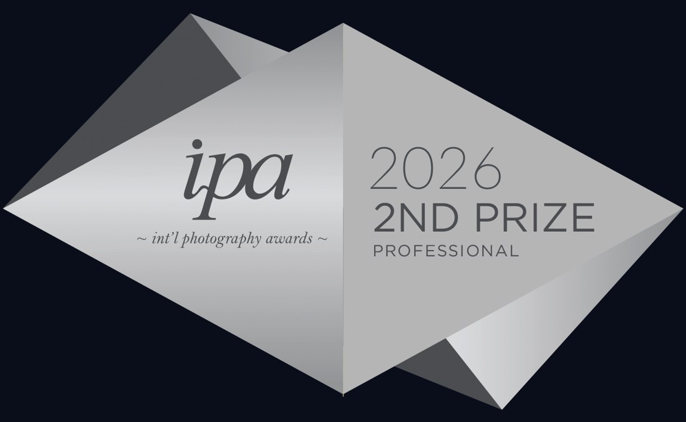
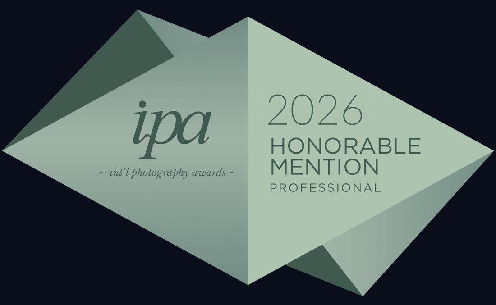
IPA to jeden z najbardziej prestiżowych konkursów fotograficznych na świecie, z tysiącami zgłoszeń z kilkudziesięciu krajów. W 2026 zdobyłem miejsca na podium i wyróżnienia w kilku kategoriach, a nagrody odebrałem na gali w Muzeum Benaki w Atenach. Każdy taki werdykt to potwierdzenie od międzynarodowego jury, że kadr broni się i techniką, i historią.
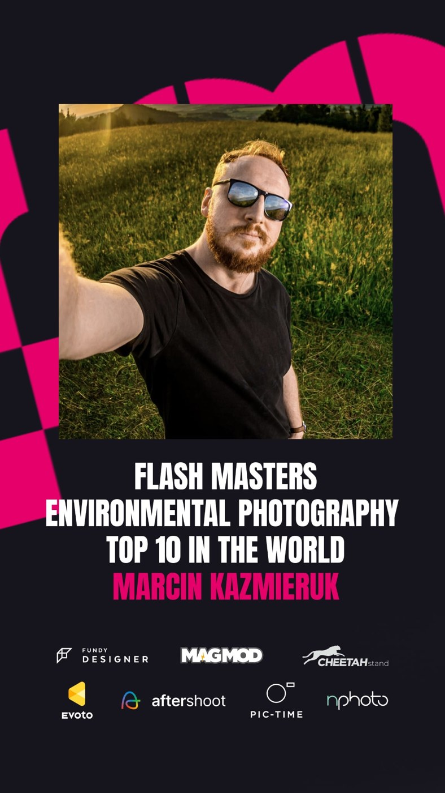
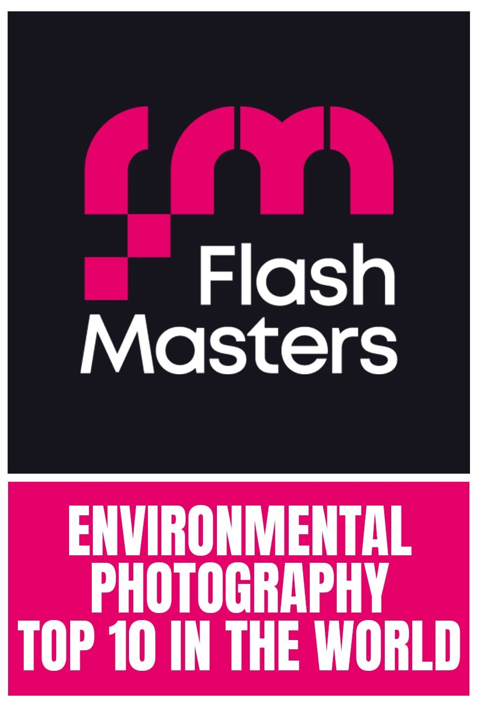
Top 10 na świecie we Flash Masters w kategorii Environmental Photography. To zestawienie najlepszych fotografów operujących światłem w plenerze, z całego świata. Znaleźć się w pierwszej dziesiątce globu to dla mnie ogromne wyróżnienie, bo liczy się tam pomysł, światło i odwaga, a nie sprzęt.
Cztery nagrody w IPA 2026: pierwsze miejsce w kategorii Sport, drugie w kategorii Event oraz dwa wyróżnienia w Advertising Food & Beverage i Panorama. Gala w Muzeum Benaki w Atenach.
Spotlight Awards organizuje Production Paradise, platforma, z której korzystają agencje i marki na całym świecie. Prace ocenia jury złożone z art buyerów i dyrektorów kreatywnych, między innymi z marek pokroju Unilever czy Arla. Znalezienie się na shortliście, w TOP 10 w kategorii kulinarnej, to sygnał, że moje kadry bronią się w oczach ludzi, którzy zawodowo kupują fotografię reklamową.
Wyróżnienie od Prezydenta Jeleniej Góry, wręczone w Teatrze im. Norwida.
Zdjęcia mojego autorstwa w kapsule czasu na iglicy Teatru Norwida, dla przyszłych pokoleń.
Pierwsze miejsce w międzynarodowym rankingu fotografii kulinarnej. Rekordowy wynik.
Stypendium jednego z najlepszych studiów ślubnych świata. Członek Nikon Professional Services.
Wyróżnienie w kategorii Environmental oraz złoto za zdjęcie sportowe.
306 opinii z oceną „polecam w 100%”. Najlepsza rekomendacja to ta od klientów.
Festiwale, gale, koncerty i premiery. Tam, gdzie dzieje się coś ważnego, jestem z aparatem od kulis po scenę.
Scena, kulisy, twarze gwiazd i szał tłumu. Łapię ten jeden moment, którego nie da się powtórzyć… i oddaję energię tak, żebyście poczuli, że tam byliście.
Oficjalny fotograf od 2017. Armin van Buuren, Fatboy Slim, deadmau5, Alok i dziesiątki innych gwiazd.
Meet & Greet z gwiazdami estrady, 70-lecie TVP.
Oficjalny fotograf najważniejszych wydarzeń kulinarnych w Polsce.
Jeden z oficjalnych fotografów premiery, kampania TVP.
Reportaż z najważniejszego dnia, bez sztucznych póz i bez retuszu. Emocje, światło i moment, który wydarzył się naprawdę.
Wasz dzień opowiedziany po swojemu, od pierwszych nerwów przy makijażu po ostatni taniec. Nie ustawiam scenek, czekam na to, co dzieje się samo… żebyście za lata przeżyli ten dzień jeszcze raz, patrząc na zdjęcia.
Nie robię zachowawczych zdjęć ślubnych. Opowiadam Waszą historię przez obrazy, które wykraczają poza typową fotografię, oddają to, kim jesteście, i zatrzymują przy sobie zupełnie obcych ludzi.
Jestem z Wami cały dzień, od przygotowań po ostatni taniec. Nie ustawiam sztucznych scen, uwieczniam szczere momenty, gdy się wydarzają, i delikatnie podpowiadam, żebyście zabłyśli w naturalny sposób.
Zapytaj o szczegółyJedyny Polak i jedna z 4 osób na świecie z pełnym stypendium 2MU. 14 tygodni warsztatów.
Zdjęcia ślubne wśród najlepszych na świecie w danym tygodniu.
Liczne srebra za zdjęcia ślubne (Pałac Wojanów, Wrocław i in.).
Corocznie od 2019. Współpraca z VESNA weddings i Moje Śluby.
Realizacje w kraju i za granicą: Pałac Wojanów, Zamek Czocha, Karpniki, Dwór Korona Karkonoszy oraz śluby międzykontynentalne (Polska–Australia), Praga, Grecja.
Dania, menu i atmosfera lokalu w świetle, które sprzedaje. #1 wśród fotografów kulinarnych Foodelia 2025.
Zdjęcie, które sprzedaje danie, zanim gość spojrzy w menu. Ustawiam światło, czekam na ten moment i łapię teksturę, parę, ociekający sos… tak, żeby ślinka ciekła. Każde danie ma swój charakter i pod to buduję kadr, nie pod cudzy szablon.
Pierwsze miejsce w międzynarodowym rankingu fotografii kulinarnej. Rekordowy wynik.
Sesje dla restauratorów z rankingu TOP 50 oraz grupy hotelowej.
Oficjalny fotograf eliminacji i gali Żółtego Przewodnika.
Karol Okrasa, Adam Chrząstowski, Ernest Jagodziński i wielu innych.
Sesje dla restauracji, hoteli i marek, w kraju i za granicą (Holandia, Grecja). Warsztaty fotografii kulinarnej z Nikonem.
Spektakle, próby i festiwale. Najcenniejsze są chwile, których widz nie zobaczy, tam zaczyna się prawdziwy teatr.
To, co dzieje się między próbą a premierą, czego widz nigdy nie zobaczy. Fotografuję teatr tak, jak go czuję… światło, gest, napięcie tuż przed tym, aż aktor przestaje grać, a zaczyna być.
Stały fotograf. Spektakle, próby i premiery, od Romea i Julii po Królową Cateringu.
Fotograf edycji 48–52. Krystyna Janda, Olaf Lubaszenko i wielu innych.
Fotograf od lat. Teatry z całej Europy i świata.
Arcydzieła baletowe Polskiego Baletu Narodowego na scenie Norwida.
Zdjęcie z „Królowej Cateringu" wybrane jako „Zdjęcie Dnia" przez e-teatr.pl / Teatr w Polsce.
Wnętrza restauracji, portret wizerunkowy dla marek i osobistości. Profesjonalnie i naturalnie.
Wnętrza, portrety i marki pokazane tak, jak chcecie być zapamiętani. Każde miejsce ma swoją duszę, moją robotą jest ją wyłapać i sprawić, żeby budowała zaufanie od pierwszego spojrzenia.
Hotele, restauracje i przestrzenie, atmosfera i detal, które sprzedają.
Dla marek, szefów kuchni, ludzi sukcesu, naturalnie i bez sztuczności.
Sesje dla grupy hotelowej z 2. miejsca w rankingu sieci.
Ambasador Seth & Riley's Garage, współpraca z Nikon Polska.
Hotele, restauracje i wnętrza sfotografowane tak, żeby gość chciał tam być, zanim jeszcze przyjedzie.
Hotel to obietnica, a wnętrze ją składa. Fotografuję przestrzenie tak, żeby światło, faktura i klimat sprzedawały pobyt, zanim gość przekroczy próg.
Jak przetwarzane są Twoje dane, gdy się ze mną kontaktujesz, i kto za nie odpowiada.
Administrator danych. ELT-Centre Marcin Kaźmieruk, ul. Podgórze 1A/1, 58-500 Jelenia Góra. NIP 6112505234, REGON 021716660.
Jakie dane. Korzystając z formularza lub pisząc do mnie, przetwarzam dane, które podajesz: imię, adres e-mail oraz treść wiadomości.
Cel i podstawa. Dane służą wyłącznie do odpowiedzi na Twoje zapytanie i ustalenia ewentualnej współpracy (art. 6 ust. 1 lit. b i f RODO).
Okres przechowywania. Dane trzymam tylko tak długo, jak wymaga tego nasza korespondencja i ewentualna realizacja, a potem je usuwam.
Twoje prawa. Masz prawo dostępu do danych, ich sprostowania, usunięcia, ograniczenia i sprzeciwu wobec przetwarzania, a także wniesienia skargi do Prezesa UODO.
Cookies. Strona nie używa plików cookie śledzących ani zewnętrznej analityki. Formularz kontaktowy otwiera Twój program pocztowy i nie zapisuje niczego na stronie.
Kontakt. We wszystkich sprawach dotyczących danych pisz na fotokaz85@gmail.com.
KontaktŚlub, sesja kulinarna, wydarzenie czy spektakl, napisz albo zadzwoń. Najchętniej zaczynam od zwykłej rozmowy.